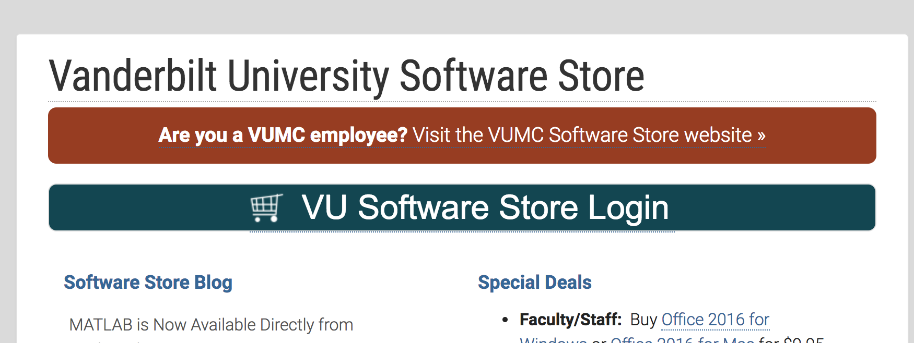
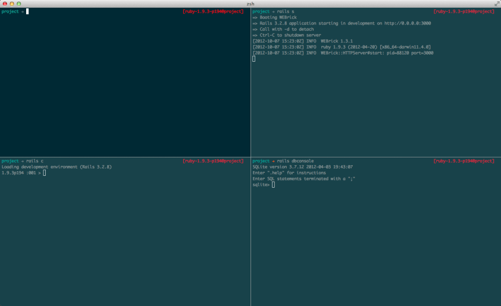
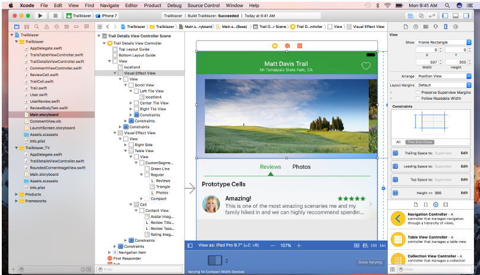
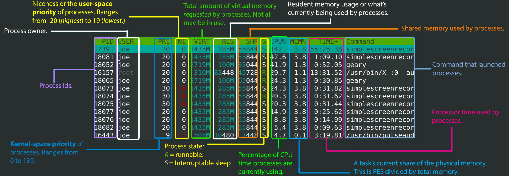
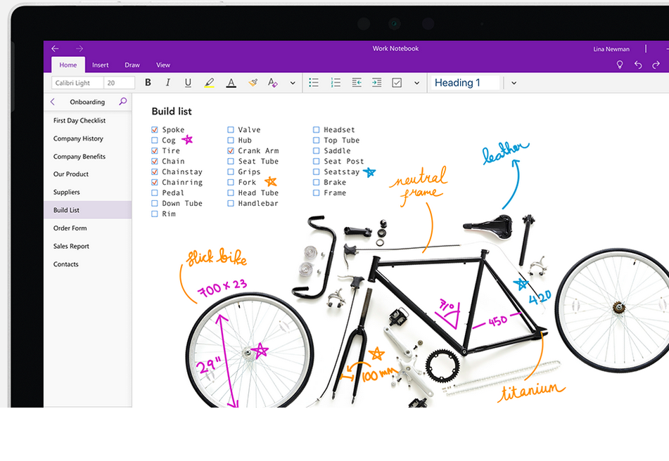
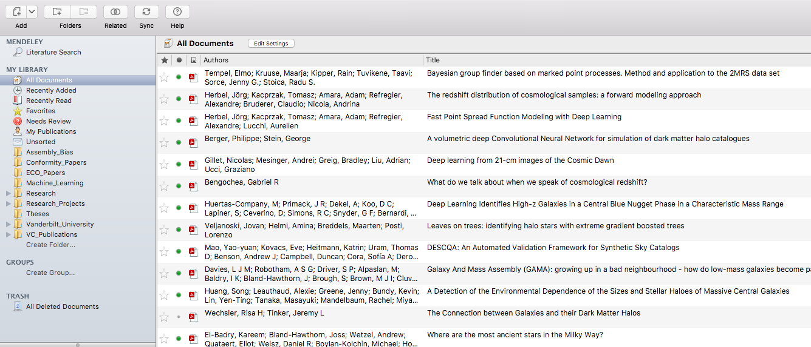
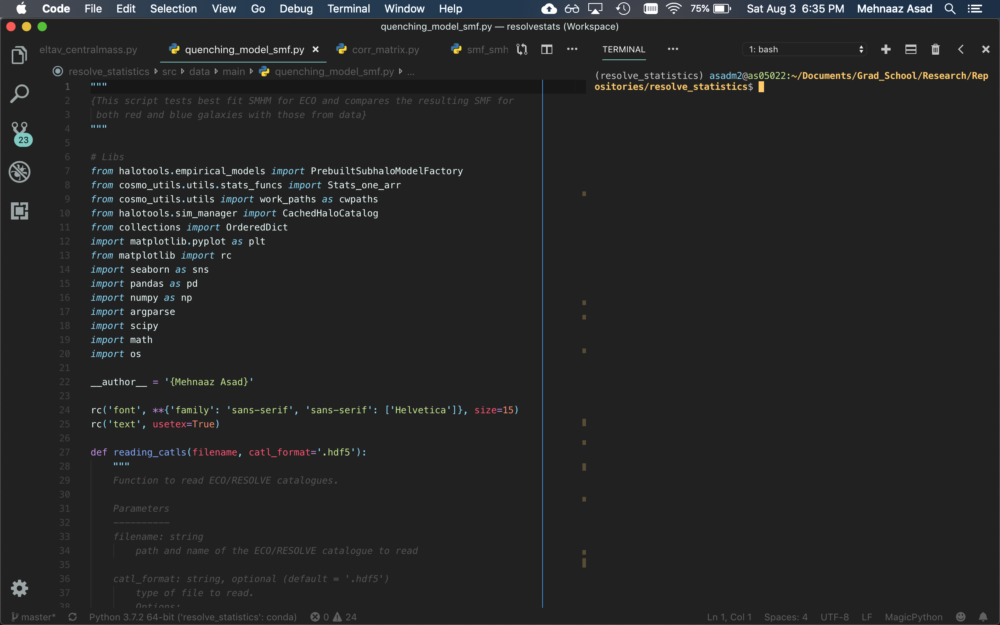

Software to install
You may need to install new software to:
- Create presentations
- Write journal papers
- Add equations to your presentations
- Edit a file in the terminal
- Run scripts
- etc ...
Vanderbilt Download Center
https://it.vanderbilt.edu/software-store/ Vanderbilt Download Center
https://it.vanderbilt.edu/software-store/- Microsoft Office
- Matlab
- Mathematica
- Skype for Business
- Windows 10
- and a lot more!
And most of it is free!
Terminal Environment
iTerm
What is iTerm?
iTerm2 is a replacement for Terminal and the successor to iTerm. It works on Macs with macOS 10.10 or newer.
I personally haven't used this one quite as much so it really comes down to whatever works for you
iTerm
- Split panes
- Hotkey window
- Autocomplete
- Mouse reporting
- Tagged profiles
- Multi-lingual
- Automatic profile
switching - Inline images
- a lot more!
iTerm
More on terminal stuff later!
Xcode
https://developer.apple.com/xcode/ Xcode
App Store for the full install! (Big and slow!)
You can also just install the command-line tools:
- Try typing
"gcc"in the terminal - You should be prompted to install
the command-line tools
If not, type the following in the terminal:
xcode-select --install
XQuartz
https://www.xquartz.org/- Used for displaying graphics from the terminal!
- Also used by remote computers to display graphics
Vim
https://www.vim.org/- A highly configurable text editor that comes with the MacOS
Aquamacs
Emacs for Mac OSX
http://aquamacs.org/- An Editor for Text, HTML, LaTeX, C++, Java, Python, R, Perl, Ruby, PHP, and more
LaTeX
Excellent for:
- document preparation
- For medium-to-large technical or scientific documents
- Any kind of publishing
LaTeX
You will need to first download MacTex: (~3.2 G!)
https://www.tug.org/mactex/
Just follow the steps to install it and test your installation using these instructions!
Pulse Secure VPN
You might need to access one of the remote servers from "home"
You will need to connect through a VPN
Pulse Secure VPN
VPN = Virtual Private Network

Pulse Secure VPN
Download at
https://it.vanderbilt.edu/security/secure-communications/remote-access/index.php
Instructions for MacOS
https://it.vanderbilt.edu/security/secure-communications/remote-access/junos-pulse-osx.php
Homebrew
Homebrew
Paste the following at a Terminal prompt to install
/usr/bin/ruby -e "$(curl -fsSL https://raw.githubusercontent.com/Homebrew/install/master/install)"
Homebrew
To search for a package:
brew install <packagename>
Homebrew
Get info about a package:
brew info <packagename>
Homebrew
Install a package:
brew install <packagename>
Homebrew
Install the following packages
brew install rsync
brew install htop
brew install tree
brew install gcc
brew install git
htop
This is a process viewer and manager.


Taking notes
There are several different programs out there to do this.
I know of 2 in particular!
Microsoft OneNote
Same idea as Evernote!
Microsoft OneNote
https://products.office.com/en-us/onenote/digital-note-taking-app
Evernote
You can takes notes for
- Ideas for a journal paper
- Research meeting
- Research journal!
- etc ...
Evernote
https://evernote.com/There are probably many other ones out there ...
But these are some popular ones
Reading and managing papers
Reading and managing papers
To keep up with our field,
we have to read papers often!
And we need a way to organize it too!
Reading papers
There are many websites out there to do just this:
- VoxCharta
- ADS
- Astrobites
- Benty-fields
- amongst others ...
Reading papers
Reading papers
Another cool resource
Organizing papers
After reading them, you need to organize them
Softwares like
- Mendeley
- Papers
- Simple Finder
are great at doing this!
Organizing papers
I personally prefer Mendeley since it's free!
https://www.mendeley.com/With Mendeley, you can
- Organize papers in folders
- Sync a watched folder
- Create bibliography for project
- Update library online
Mendeley
Let's setup your Mendeley
First
- Download Mendeley:
- Create the following folders in "Documents"
- BibTex_Files
- Mendeley_Desktop
- Mendeley_Docs_Temporary
- Go to "Mendeley Desktop" >> "Preferences"
- Go to "File Organizer"
Now go to "Watched Folders" and choose the folder "Mendeley_Docs_Temporary"
This is the folder to which you save your files temporarily!
And finally ....
Go to "BibTex" tab
Now with Mendeley ...
- Files will now be in sync
- They will be available when you save them in "Mendeley_Docs_Temporary"
- You can create a bibliography for a project
- And you are finally organized!
Programming editors
Programming editors
We code every day.
So, you need to feel comfortable doing it.
You need to make the right choice for you!
Programming editors
My personal choice is
Microsoft Visual Studio Code
VS Code
https://code.visualstudio.com/ Other editors
- Sublime - https://www.sublimetext.com/
- Anaconda Spyder - https://pythonhosted.org/spyder/installation.html
- Emacs - https://www.gnu.org/software/emacs/
- Atom - https://atom.io/
- Vim - https://www.vim.org/
More on this later ...
Summary
- Vanderbilt Download Center
- Terminal Environments
- LaTeX
- Accessing through a VPN
- Using Homebrew
- Taking notes
- Reading and managing papers
- Programming editors
Now you are almost set ...
Homework for Day 1
- Send me an email from your Vandy email address with your VUnet ID
- Use Keynote to make a nameplate for you
- Print your nameplate out on the 9th floor printer at Vanderbilt
Back to main website: